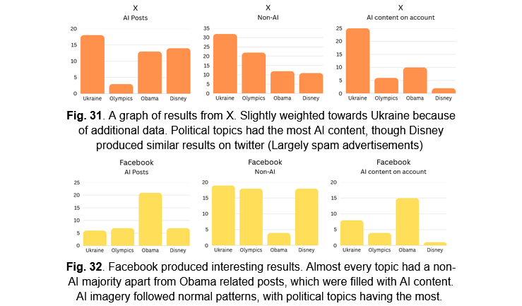
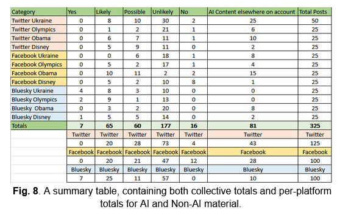

University Final Project - A Dissertation on the 'dead internet theory', Large Language Models, and AI-Generated social media posts
2026 University Final Project. A dissertation and study into the 'dead internet theory' and it's validity, exploring the effect of LLMs on social media.
Quantative Research | Agile Management | Academic Writing | Large Language Models | AI Ethics
For my year-long final university project, I chose to write a Dissertation about a conspiracy theory known as 'dead internet theory', which claims the internet has been overtaken by AI bots. I planned and executed a study of social media posts across a variety of platforms and subjects to try and analyse the extent of this problem.
I had the whole of my third year to complete this project. Though I initially fell behind schedule, I was able to massively increase the pace of the project by implementing an Agile methodology, defining a clear timeline of goals and milestones for myself to hit. I performed a quantative analysis of over 250 social media posts. I explored the history of Large Language Models and AI-powered misinformation and tied this into my own research, exploring the methods, motivations and sources of these AI posts.
I achieved a score of 77 on this Dissertation, and was complemented by my markers on having written an educational and well-considered academic paper. In particular, one marker described it as one of the best papers they had read.
You can read my Dissertation here.
Below are some excerpts of my dissertation, including it's Abstract.


